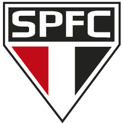

História
Fundado em 1930, o São Paulo Futebol Clube se tornou um dos clubes mais vitoriosos do Brasil e da América do Sul. Conhecido como Tricolor Paulista, construiu tradição de títulos e formação de grandes jogadores ao longo do século XX e XXI.

Painel do torcedor
Fundado em 1930, o São Paulo Futebol Clube se tornou um dos clubes mais vitoriosos do Brasil e da América do Sul. Conhecido como Tricolor Paulista, construiu tradição de títulos e formação de grandes jogadores ao longo do século XX e XXI.
Libertadores, Campeonato Brasileiro (Série A), Copa do Brasil, Supercopa e outros troféus nacionais e internacionais.
Morumbi (Estádio Cícero Pompeu de Toledo) — palco de grandes finais e partidas memoráveis.
Resumo: Clima muito quente no Morumbi em junho — casos institucionais e movimentações de elenco dominam pautas.
Teste seus conhecimentos sobre o Tricolor! Clique em Começar para iniciar o quiz.